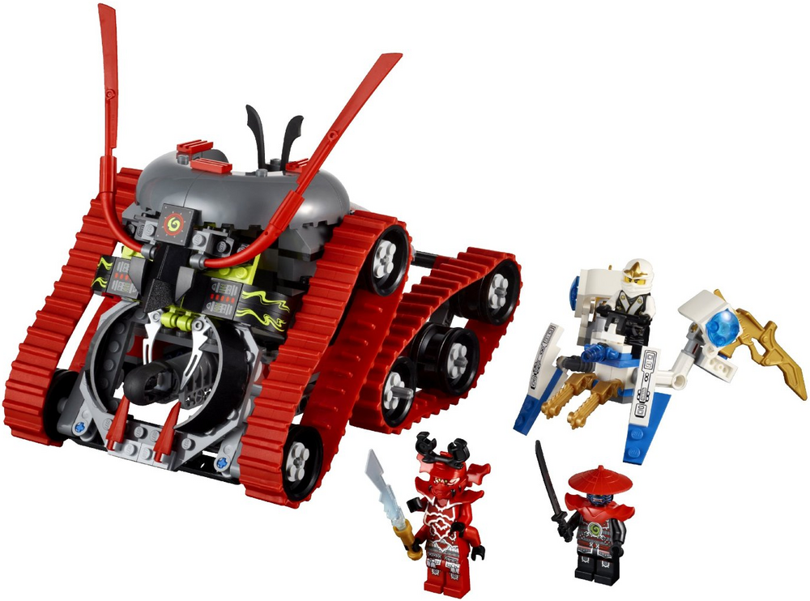
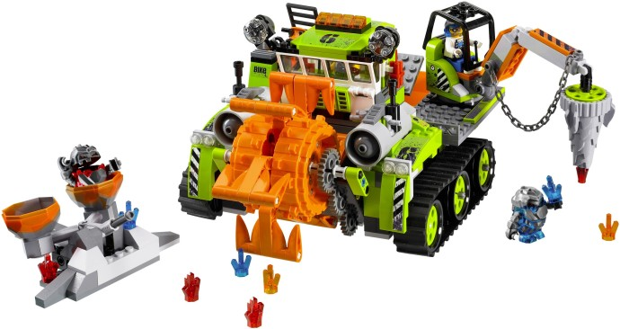
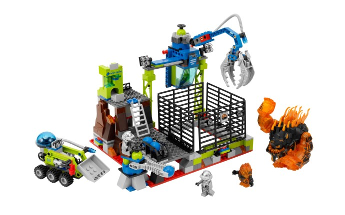
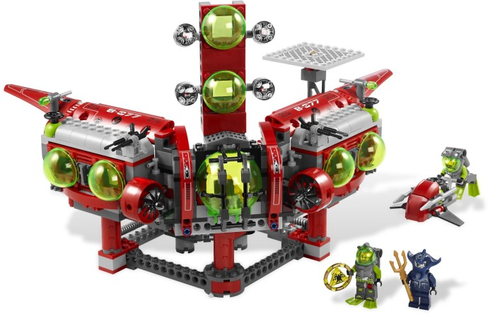

LEGO® Ninjago
LEGO® Ninjago is a LEGO® theme that was introduced in 2011, which is a flagship brand of The LEGO® Group. It is the first theme to be based on ninja since the discontinuation of the Ninja theme in 2000. Whilst it retains some elements of the previous theme, it is based on a more detailed storyline set within a fantasy world, primarily underpinned by the computer-animated television series Ninjago.
The theme focuses on a group of six teenage ninja, led by the legendary Green Ninja, Lloyd Garmadon. The main ninja characters are defined in the story as "Elemental Masters", which means that they each possess elemental powers. The ninja are trained in the fictional martial art of "Spinjitzu" by their ancient and wise teacher, Master Wu, giving them the ability to fight against the forces of evil.
Why was it Discontinued?
Even with a TV show with 15 seasons, a reboot, and it's own animated Film, the Ninjago series was met with mediocre reviews, over time leading to a loss of interest and a decrease in sales. This could have been foreseen in 2013, when the series was only brought back from retirement due to favourable opinions from fans.
Despite this, the legacy of the series still lives on in it's rebooted sets, brought about by the release of the movie in 2016. These sets touched on old design concepts such as the dragons and the Destiny's Bounty ship, re-designing them to work with the updated models and figurines.
LEGO® Power Miners
LEGO® Power Miners was a product range – or "theme" – of the construction toy LEGO® based beneath the surface of the LEGO® World, wherein a team of 'Power Miners' investigate the cause of a series of severe earthquakes and discover Rock Monsters and Energy Crystals. The theme was released originally in 2009 and discontinued in 2010.
The Power Miners (Doc, Duke, Rex, and Brains) are sent underground by the government to investigate a series of earthquakes occurring in the Southwest Region of the U.S that have destroyed several cities on the surface of the Lego World. While underground, they discover the Energy Crystals and the Rock Monsters (Meltrox, Boulderax, Glaciator, Sulfurix, Firox, Geolix and Tremorox).
They attempt to collect and mine the crystals in order to stop the monsters from consuming them and causing the earthquakes on the surface. However, a bigger threat emerges in the form of The Crystal King, the undisputed ruler of all Rock Monsters underground has awoken from his years of sleep.
Why was it Discontinued?
In 2010, Lego released a third wave of Power Miners sets, this time with a new theme, Lava. Shockingly, this third wave didn't sell well, especially compared to the previous two waves, and did not meet Lego's standards. As a result, the Power Miners theme was cancelled due to Lego's three-wave strategy.
Although there was a cancelled Power Miners set that wave, vehicle thirteen, what is worse was supposedly a fourth wave was planned due to the success of the first two waves, but due to the results of the third wave, was ultimately cancelled.
LEGO® Atlantis
LEGO® Atlantis was a LEGO® theme released in early 2010, themed around the underwater world of Atlantis. The designer, William Thorogood, commented that from design focus groups, "it emerged that there were certain key icons the product simply had to include: propellers, dome cockpits, big lights, helmets, harpoons, torpedo-like weapons, tridents, giant squid, and evil sharks."
The sets introduced two groups of good and evil characters. The first was the Atlantis salvage crew of "heroic divers", led by Captain Ace Speedman. Also in the crew was marine biologist Dr. Jeff Fisher, First Mate Lance Spears, "Tech Expert" Axel Storm, and apprentice Bobby Buoy. Professor Samantha Artesia Rhodes was also part of the team, but was described as having "not initially been part of the crew, so she tricks them into helping look for Atlantis".
The evil characters were described as "Atlantis Warriors", and had human-like bodies with the heads of a sea creature. The three warriors were the "Squid Warrior" (with tentacles as well as a squid-like head), "Manta Warrior" (with the head of a manta ray), and "Shark Warrior'" who performed a shark attack. Finally, there was the "Portal Emperor", who resided over the portal to Atlantis.
Why was it Discontinued?
The theme was discontinued by the end of 2011 due to low consumer interest. To try to keep the series alive, a Lego Summer Camp was set up in the Bahamas. This Summer camp included a life-sized figure of a SCUBA diver from the sets.
In 2011, a ride based on the Atlantis theme was introduced at Legoland Windsor Resort. Atlantis Submarine Voyage combined a dark submarine ride with Sea Life exhibits and was located in the Adventure Land area of the park. The attraction housed a 1 million litre tank that was home to 50 marine species. The ride was refurbished in 2019 and renamed Lego City Deep Sea Adventure.